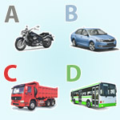
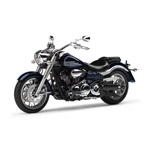
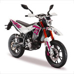
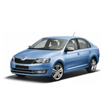
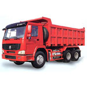
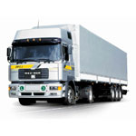
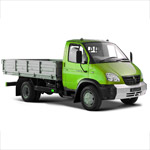

Категории и подкатегории водительских прав в 2024 году

Добрый день, уважаемый читатель.
Категория водительских прав обозначает группу транспортных средств, которой может управлять владелец водительского удостоверения.
Существуют 5 основных категорий: А - мотоциклы, B - легковые автомобили, C - грузовые автомобили, D - автобусы, М - мопеды, 4 подкатегории: A1, B1, C1, D1 и специальные категории для управления автомобилями с прицепом BE, CE, DE, C1E, D1E.
Например, водительское удостоверение категории B позволяет управлять только легковыми автомобилями и не разрешает садиться за руль маршрутного такси или автобуса (для этих транспортных средств нужны водительские права категории Д).
В этой статье будут рассмотрены категории и подкатегории водительских прав, а также особенности их использования при управлении транспортными средствами.
Водитель имеет право управлять только транспортными средствами, категории которых указаны на оборотной стороне его водительского удостоверения. Если он не будет соблюдать указанное требование, то получит штраф за отсутствие категории прав -
5 000 - 15 000 рублей.
Категории и подкатегории водительских прав в 2024 году
С 5 ноября 2013 года вступили в силу изменения в закон "О безопасности дорожного движения", которые не только изменили перечень категорий водительского удостоверения, но и добавили совершенно новые подкатегории. Расшифровка категорий водительских прав приведена в следующей таблице:
| Категория или подкатегория | Тип транспортного средства |
|---|---|
| A | Мотоциклы |
| A1 | Легкие мотоциклы |
| B | Легковые автомобили, небольшие грузовики (до 3,5 тонн) |
| BE | Легковые автомобили с прицепом |
| B1 | Трициклы |
| C | Грузовые автомобили (от 3,5 тонн) |
| C1 | Средние грузовики (от 3,5 до 7,5 тонн) |
Водительские права категории А
1. В Российской Федерации устанавливаются следующие категории и входящие в них подкатегории транспортных средств, на управление которыми предоставляется специальное право (далее - право на управление транспортными средствами): категория "А" - мотоциклы;
Водительское удостоверение категории А позволяет управлять любыми мотоциклами, в том числе и мотоциклами с коляской. Кроме того, оно дает право на управление мотоколясками, которые в 2024 году на дорогах встретить чрезвычайно сложно. Напомню, что к мотоциклам в соответствии с ПДД относятся двухколесные транспортные средства с боковым прицепом или без него. Кроме того, категория А позволяет управлять трехколесными и четырехколесными транспортными средствами, которые в снаряженном состоянии имеют массу не более 400 кг.
Подкатегория А1
подкатегория "А1" - мотоциклы с рабочим объемом двигателя внутреннего сгорания, не превышающим 125 кубических сантиметров, и максимальной мощностью, не превышающей 11 киловатт;
Подкатегория А1 позволяет управлять мотоциклами с небольшим объемом двигателя и небольшой максимальной мощностью. Отмечу, что водители, имеющие в правах категорию А могут управлять и транспортными средствами подкатегории А1. Важное отличие подкатегории А1 состоит в том, что ее можно открыть в 16-летнем возрасте.
Водительские права категории B
категория "В" - автомобили (за исключением транспортных средств категории "А"), разрешенная максимальная масса которых не превышает 3500 килограммов и число сидячих мест которых, помимо сиденья водителя, не превышает восьми; автомобили категории "В", сцепленные с прицепом, разрешенная максимальная масса которого не превышает 750 килограммов; автомобили категории "В", сцепленные с прицепом, разрешенная максимальная масса которого превышает 750 килограммов, но не превышает массы автомобиля без нагрузки, при условии, что общая разрешенная максимальная масса такого состава транспортных средств не превышает 3500 килограммов;
Водительское удостоверение категории В позволяет управлять легковыми автомобилями, а также небольшими грузовиками, микроавтобусами и джипами, соответствующими вышеприведенным требованиям. Также категория B дает право управления мотоколясками и автомобилями с прицепом, разрешенная максимальная масса которого не более 750 кг. Кроме того существует возможность использования и прицепов, масса которых превышает 750 килограммов, при соблюдении следующих требований: 1. Разрешенная максимальная масса прицепа не должна превышать массы автомобиля без нагрузки. 2. Суммарная разрешенная максимальная масса автомобиля и прицепа не должна превышать 3,5 тонны. Например, пусть разрешенная максимальная масса автомобиля составляет 1 900 кг, а масса без нагрузки 1 400 кг (эти величины указываются в пунктах 14 и 15 паспорта транспортного средства). Имея удостоверение категории B можно к указанному автомобилю присоединить прицеп, разрешенная максимальная масса которого 1400 кг. В этом случае разрешенная максимальная масса прицепа не превышает массу автомобиля без нагрузки. Кроме того, разрешенная максимальная масса состава транспортных средств составляет 1 900 + 1 400 = 3 300 кг. Она не превышает 3 500 килограммов.
BE
Для управления автомобилем категории B с тяжелым прицепом, водителю потребуется категория BE:
Подкатегория А1 позволяет управлять мотоциклами с небольшим объемом двигателя и небольшой максимальной мощностью. Отмечу, что водители, имеющие в правах категорию А могут управлять и транспортными средствами подкатегории А1. Важное отличие подкатегории А1 состоит в том, что ее можно открыть в 16-летнем возрасте.
Подкатегория B1
подкатегория "В1" - трициклы и квадрициклы;
В 2023 году подробная информация по транспортным средствам категории B1 отсутствует. Обратите внимание, "квадрИцикл" и "квадрОцикл" это не одно и то же. Поэтому обычные водительские права на квадроцикл не подойдут.
Водительские права категории С
категория "С" - автомобили, за исключением автомобилей категории "D", разрешенная максимальная масса которых превышает 3500 килограммов; автомобили категории "С", сцепленные с прицепом, разрешенная максимальная масса которого не превышает 750 килограммов;
Водительские права категории С позволяют управлять только средними (от 3500 кг до 7500 кг) и тяжелыми (более 7500 кг) грузовиками, а также грузовиками с прицепом, разрешенная максимальная масса которого не превышает 750 кг. Обратите внимание, категория C не дает права управления небольшими (меньше 3500 кг) грузовиками и легковыми автомобилями.
СЕ
категория "СЕ" - автомобили категории "С", сцепленные с прицепом, разрешенная максимальная масса которого превышает 750 килограммов;
Для управления автомобилем категории С с тяжелым (более 750 кг) прицепом или полуприцепом водителю потребуется дополнительная категория CE.
Подкатегория С1
подкатегория "С1" - автомобили, за исключением автомобилей категории "D", разрешенная максимальная масса которых превышает 3500 килограммов, но не превышает 7500 килограммов; автомобили подкатегории "С1", сцепленные с прицепом, разрешенная максимальная масса которого не превышает 750 килограммов;
К подкатегории С1 относятся средние грузовики, разрешенная максимальная масса которых находится в интервале от 3,5 до 7,5 тонн. Также эта подкатегория позволяет перевозить и легкий прицеп (до 750 кг). Водители, имеющие основную категорию С, могут управлять и транспортными средствами подкатегории С1.